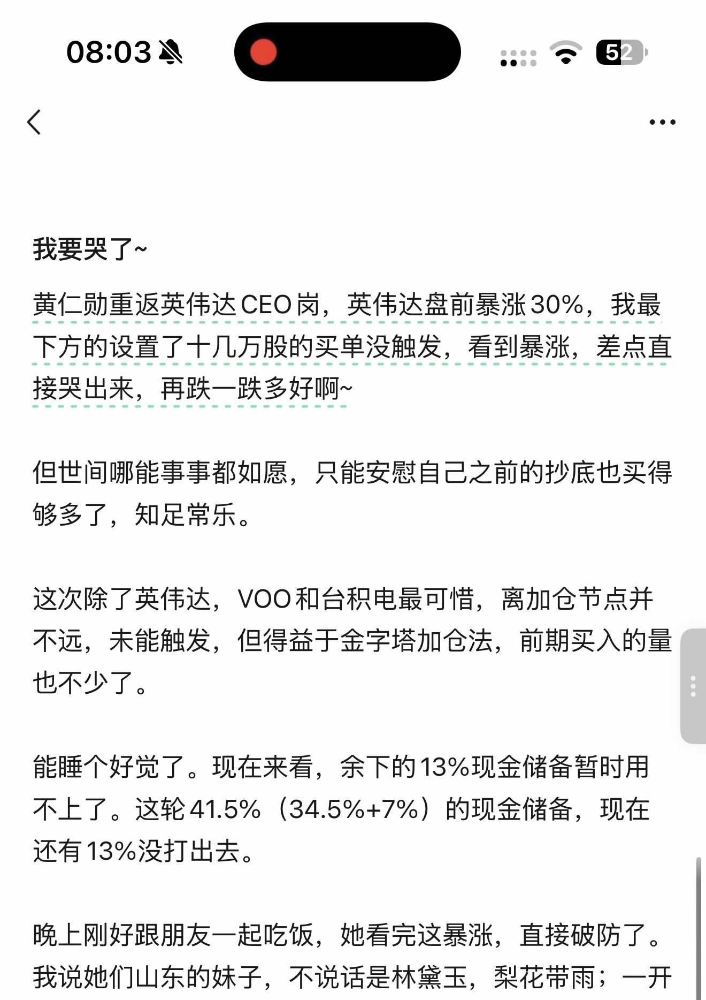
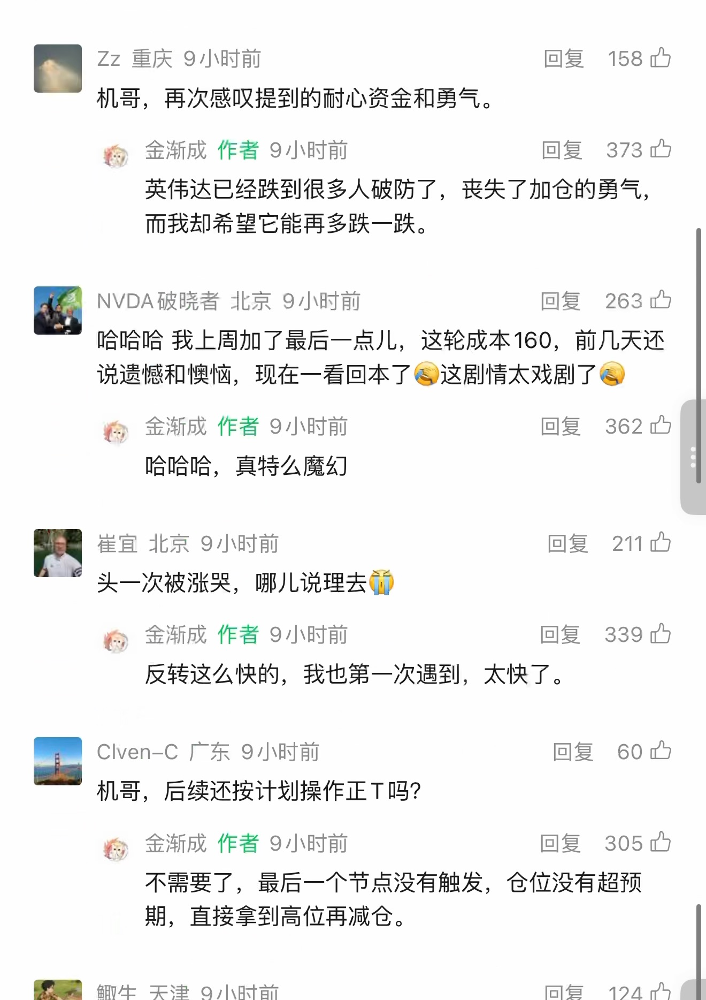
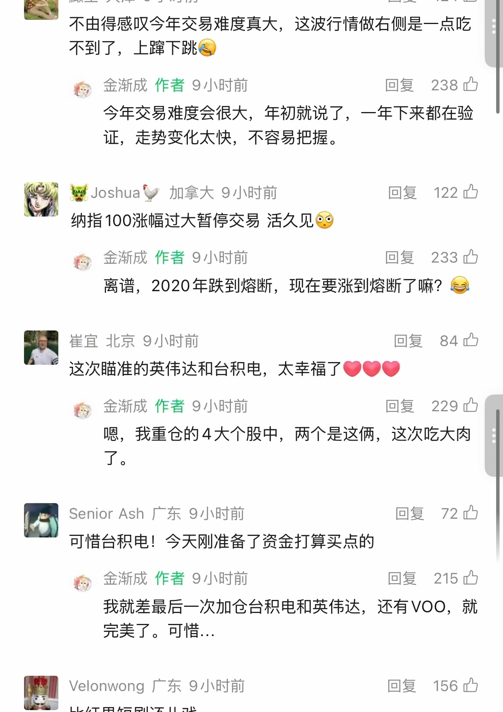
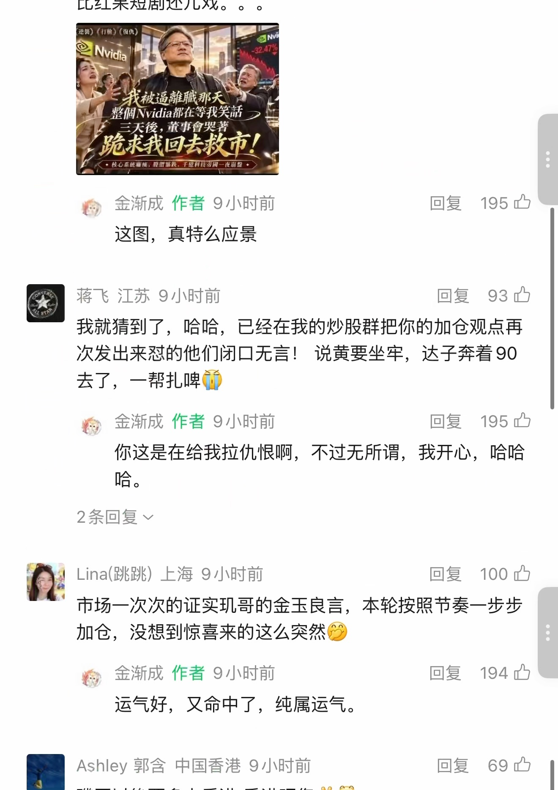
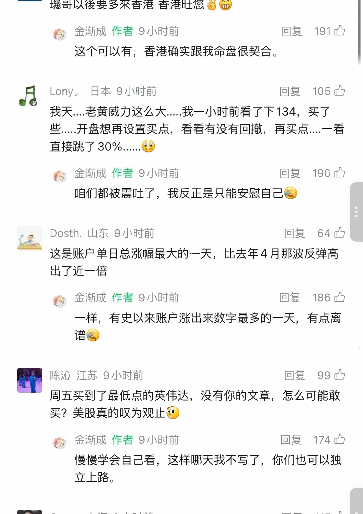
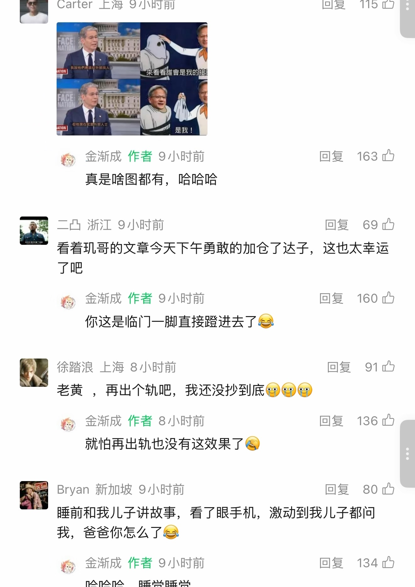
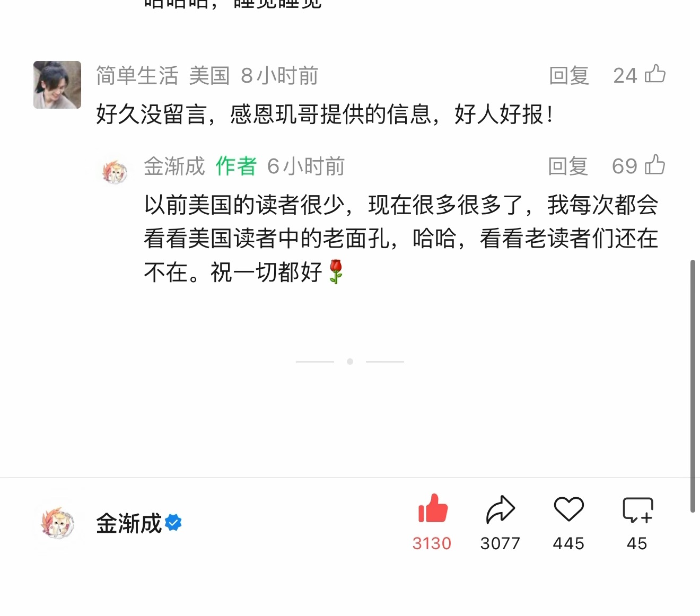

我要哭了~
识别文字连续阅读 · 原图附后
原始 PDF 不公开，本页展示已净化的捕获页面截图（第 2 页因含未精选私人留言不公开原图）。 识别文字按页序连续显示，公开原始截图附在文末，便于对照。文字由视觉转录整理，尚未经人工逐字核对，可能存在错字、漏字、漏行、顺序或断行错误。留言与作者回复仅限截图中可见的公开精选内容，不代表完整线上留言，也未据此推断留言总数。
OCR 识别提示（待核对）
- OCR/视觉转录文字，尚未逐字校对；可能错字、漏字、漏行，数字、姓名、表情、标点及断行也可能有误，请以截图为准。
- 这里只保留 PDF 已截到的正文、公开精选留言和作者回复；第 2 页未精选私人留言不在此转录与公开页面中。
- 未从截图推断留言总数或回复关系；手机界面文字也可能混入 OCR。
- 方括号中的表情及附图说明是转录注释，原始表情与配图请对照截图。
- 页面边界仅露出少量字形的重复行归到文字主体可见的相邻页；不推断缺失内容。
识别文字
文字按截图页序整理；页边重复行仅保留一次，私库完整保留原图和 PDF。方括号中的表情与配图说明为转录注释。
第 1 页对照原图
[顶部状态栏]
08:03 · 静音 · Wi-Fi · 电量52%
我要哭了~
黄仁勋重返英伟达CEO岗，英伟达盘前暴涨30%，我最下方的设置了十几万股的买单没触发，看到暴涨，差点直接哭出来，再跌一跌多好啊~
但世间哪能事事都如愿，只能安慰自己之前的抄底也买得够多了，知足常乐。
这次除了英伟达，VOO和台积电最可惜，离加仓节点并不远，未能触发，但得益于金字塔加仓法，前期买入的量也不少了。
能睡个好觉了。现在来看，余下的13%现金储备暂时用不上了。这轮41.5%（34.5%+7%）的现金储备，现在还有13%没打出去。
晚上刚好跟朋友一起吃饭，她看完这暴涨，直接破防了。我说她们山东的妹子，不说话是林黛玉，梨花带雨；一开
第 2 页对照原图
口说话是鲁智深，狂风暴雨。
明天本来不打算更新的，但这么涨，很多人会有表达欲，那就这会先写个简稿，反正晚上肯定是涨得离谱，账户数字蹭蹭蹭往上加，就没必要再写了。
就这样吧。
[文章提示与留言区]
个人观点，仅供参考
阅读 10万+ · 中国香港 · 9小时前 · 不喜欢
留言 45
[本页含1条未精选私人留言（仅作者可见），已按归档与公开净化规则省略转录；私库保留原PDF与原图，公开站不公开本页原图]
[留言 1]
丁丰瑞｜上海｜9小时前｜赞232
老黄的威力太巨大了 再晚两天出消息多好啊！
[作者回复留言 1]
金渐成（作者）｜9小时前｜赞405
对啊，再晚两天，让英伟达跌下来，咱们能顺利买进来都会感谢他，现在回来，直接没机会加仓了...
第 3 页对照原图
[留言 2]
Zz｜重庆｜9小时前｜赞158
机哥，再次感叹提到的耐心资金和勇气。
[作者回复留言 2]
金渐成（作者）｜9小时前｜赞373
英伟达已经跌到很多人破防了，丧失了加仓的勇气，而我却希望它能再多跌一跌。
[留言 3]
NVDA破晓者｜北京｜9小时前｜赞263
哈哈哈 我上周加了最后一点儿，这轮成本160，前几天还说遗憾和懊恼，现在一看回本了[捂脸哭笑表情]这剧情太戏剧了[捂脸哭笑表情]
[作者回复留言 3]
金渐成（作者）｜9小时前｜赞362
哈哈哈，真特么魔幻
[留言 4]
崔宜｜北京｜9小时前｜赞211
头一次被涨哭，哪儿说理去[大哭表情]
[作者回复留言 4]
金渐成（作者）｜9小时前｜赞339
反转这么快的，我也第一次遇到，太快了。
[留言 5]
Clven-C｜广东｜9小时前｜赞60
机哥，后续还按计划操作正T吗？
[作者回复留言 5]
金渐成（作者）｜9小时前｜赞305
不需要了，最后一个节点没有触发，仓位没有超预期，直接拿到高位再减仓。
第 4 页对照原图
[留言 6]
鱖牛｜天津｜9小时前｜赞124
不由得感叹今年交易难度真大，这波行情做右侧是一点吃不到了，上蹿下跳[捂脸哭笑表情]
[作者回复留言 6]
金渐成（作者）｜9小时前｜赞238
今年交易难度会很大，年初就说了，一年下来都在验证，走势变化太快，不容易把握。
[留言 7]
[龙头表情]Joshua[公鸡表情]｜加拿大｜9小时前｜赞122
纳指100涨幅过大暂停交易 活久见[瞪眼表情]
[作者回复留言 7]
金渐成（作者）｜9小时前｜赞233
离谱，2020年跌到熔断，现在要涨到熔断了嘛？[笑哭表情]
[留言 8]
崔宜｜北京｜9小时前｜赞84
这次瞄准的英伟达和台积电，太幸福了[红心表情][红心表情][红心表情]
[作者回复留言 8]
金渐成（作者）｜9小时前｜赞229
嗯，我重仓的4大个股中，两个是这俩，这次吃大肉了。
[留言 9]
Senior Ash｜广东｜9小时前｜赞72
可惜台积电！今天刚准备了资金打算买点的
[作者回复留言 9]
金渐成（作者）｜9小时前｜赞215
我就差最后一次加仓台积电和英伟达，还有VOO，就完美了。可惜...
第 5 页对照原图
[留言 10]
Velonwong｜广东｜9小时前｜赞156
比红果短剧还儿戏。。。
[附图：短剧恶搞海报“（逆襲）（打臉）（復仇）我被逼離職那天 整個Nvidia都在等我笑話 三天後，董事會哭著跪求我回去救市！核心系統癱瘓，股價暴跌，千億科技帝國一夜崩盤”]
[作者回复留言 10]
金渐成（作者）｜9小时前｜赞195
这图，真特么应景
[留言 11]
蒋飞｜江苏｜9小时前｜赞93
我就猜到了，哈哈，已经在我的炒股群把你的加仓观点再次发出来怼的他们闭口无言！说黄要坐牢，达子奔着90去了，一帮扎啤[大哭表情]
[作者回复留言 11]
金渐成（作者）｜9小时前｜赞195
你这是在给我拉仇恨啊，不过无所谓，我开心，哈哈哈。
[折叠提示：2条回复]
[留言 12]
Lina(跳跳)｜上海｜9小时前｜赞100
市场一次次的证实玑哥的金玉良言，本轮按照节奏一步步加仓，没想到惊喜来的这么突然[捂嘴偷笑表情]
[作者回复留言 12]
金渐成（作者）｜9小时前｜赞194
运气好，又命中了，纯属运气。
第 6 页对照原图
[留言 13]
Ashley 郭含｜中国香港｜9小时前｜赞69
璣哥以後要多來香港 香港旺您[胜利手势表情][露齿笑表情]
[作者回复留言 13]
金渐成（作者）｜9小时前｜赞191
这个可以有，香港确实跟我命盘很契合。
[留言 14]
Lony。｜日本｜9小时前｜赞105
我天....老黄威力这么大.....我一小时前看了下134，买了些.....开盘想再设置买点，看看有没有回撤，再买点....一看直接跳了30%......[含泪表情]
[作者回复留言 14]
金渐成（作者）｜9小时前｜赞190
咱们都被震吐了，我反正是只能安慰自己[捂脸哭笑表情]
[留言 15]
Dosth.｜山东｜9小时前｜赞64
这是账户单日总涨幅最大的一天，比去年4月那波反弹高出了近一倍
[作者回复留言 15]
金渐成（作者）｜9小时前｜赞186
一样，有史以来账户涨出来数字最多的一天，有点离谱[捂脸哭笑表情]
[留言 16]
陈沁｜江苏｜9小时前｜赞99
周五买到了最低点的英伟达，没有你的文章，怎么可能敢买？美股真的叹为观止[偷看表情]
[作者回复留言 16]
金渐成（作者）｜9小时前｜赞174
慢慢学会自己看，这样哪天我不写了，你们也可以独立上路。
第 7 页对照原图
[留言 17]
Carter｜上海｜9小时前｜赞115
[附图：四格揭面具梗图“我說他們應該從外部找人 / 來看看誰會是我的接班人 / 但他現在就是外部人士 / 是我！（黄仁勋头像）”]
[作者回复留言 17]
金渐成（作者）｜9小时前｜赞163
真是啥图都有，哈哈哈
[留言 18]
二凸｜浙江｜9小时前｜赞69
看着玑哥的文章今天下午勇敢的加仓了达子，这也太幸运了吧
[作者回复留言 18]
金渐成（作者）｜9小时前｜赞160
你这是临门一脚直接蹬进去了[笑哭表情]
[留言 19]
徐踏浪｜上海｜8小时前｜赞91
老黄 ，再出个轨吧，我还没抄到底[流泪表情][流泪表情][流泪表情]
[作者回复留言 19]
金渐成（作者）｜8小时前｜赞136
就怕再出轨也没有这效果了[捂脸哭笑表情]
[留言 20]
Bryan｜新加坡｜9小时前｜赞80
睡前和我儿子讲故事，看了眼手机，激动到我儿子都问我，爸爸你怎么了[笑哭表情]
[作者回复留言 20]
金渐成（作者）｜9小时前｜赞134
哈哈哈，睡觉睡觉
第 8 页对照原图
[留言 21]
简单生活｜美国｜8小时前｜赞24
好久没留言，感恩玑哥提供的信息，好人好报！
[作者回复留言 21]
金渐成（作者）｜6小时前｜赞69
以前美国的读者很少，现在很多很多了，我每次都会看看美国读者中的老面孔，哈哈，看看老读者们还在不在。祝一切都好[玫瑰表情]
[底部界面]
金渐成（认证标记）
点赞 3130 · 分享 3077 · 喜欢 445 · 留言 45
原始图片 · 8 页
第 1 页 · 原始截图


第 2 页 · 原始截图
第 2 页原图不公开（截图含未精选私人留言）。本页正文与公开精选留言已保留于上方识别文字，私人留言未转录。
第 3 页 · 原始截图


第 4 页 · 原始截图


第 5 页 · 原始截图


第 6 页 · 原始截图


第 7 页 · 原始截图


第 8 页 · 原始截图


按日期浏览全部来源（同日按条目标识排序）
回到页首